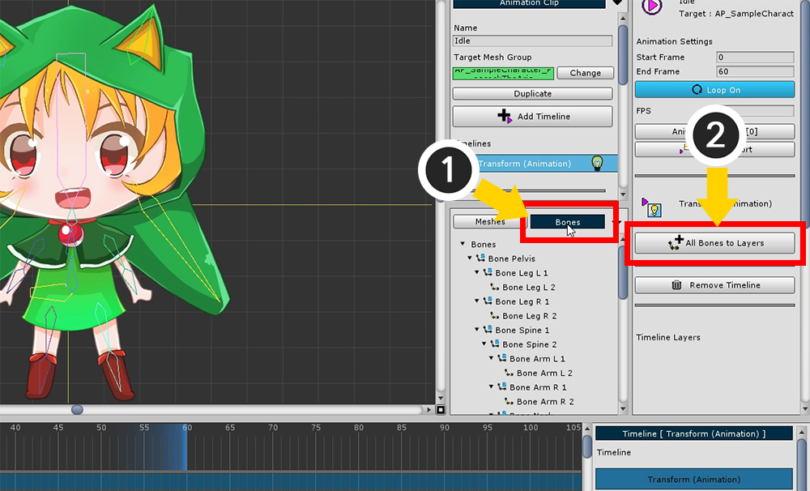
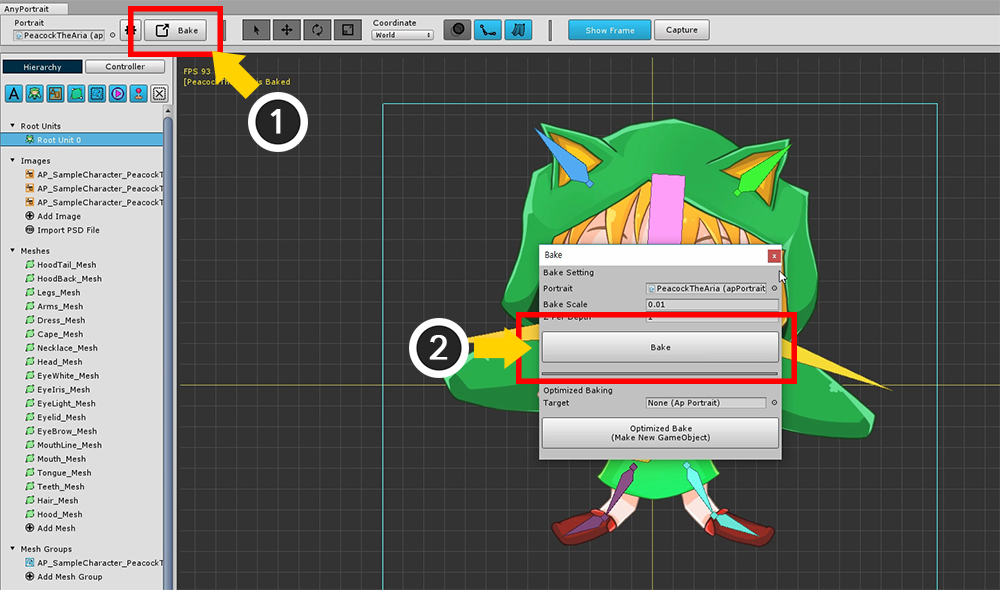

AnyPortrait > 시작하기 > 2.9. 본 애니메이션 만들기
2.9. 본 애니메이션 만들기
1.0.0
이 페이지에서는 간단한 애니메이션을 만들어봅니다.
캐릭터가 가볍게 폴짝폴짝 뛰는 반복 애니메이션을 만들면서 전체 과정을 익힙니다.

새로운 애니메이션 클립을 만들거나
이전까지 만든 애니메이션 키프레임들을 삭제합니다.
키프레임을 삭제한다면,
(1) 모든 키프레임을 선택하고 (2) Remove Keframes 버튼을 눌러 (3) 삭제를 진행합니다.

모든 본을 일일이 선택하여 타임라인에 추가하는 것은 귀찮고 오래 걸리는 일입니다.
(1) Bones 탭을 선택한 상태에서
(2) All Bones to Layers 버튼을 누르면 한번에 모든 본에 대한 타임라인 레이어를 생성합니다.
이미 추가된 본에 대해서는 작업을 생략합니다.
(Meshes 탭을 선택한 상태에서는 모든 메시를 타임라인 레이어로 추가합니다.)

본들이 모두 타임라인에 등록되었습니다.

반복 애니메이션을 만들기 위해서 애니메이션의 Loop를 켜줍니다.

두번째 프레임을 만들어야 하는데, 타임라인 레이어가 여러개가 있으면 작업이 귀찮을 수 있습니다.
이때는 Add Keyframes to All Layers 기능을 이용하면 편합니다.
(1) 타임 슬라이더를 움직인 후, (2) Add Keyframes to All Layers 버튼을 눌러서 일괄적으로 키프레임을 생성합니다.
(참고 : 키프레임을 생성하기 위해서는 편집 모드가 활성화 되어야 합니다.)

생성된 키프레임이 있는 곳으로 타임 슬라이더를 옮긴 뒤 편집 모드를 켭니다.
이 상태에서 폴짝 뛰는 포즈를 잡아줍니다.
선택 잠금을 끄고 작업하는게 편리할 수 있습니다. (단축키 : S )

키프레임들을 이동하려고 하는데 타임라인 레이어가 많아서 번거로울 수 있습니다.
타임 슬라이더 아래에 위치한 공통 키프레임을 선택하면 해당 위치에서의 모든 키프레임을 한번에 선택하고 제어할 수 있습니다.
키프레임을 이동하거나 복사를 하면서 애니메이션을 만들어봅니다.

포즈 1, 2를 반복하는 것을 몇개 더 만들어보겠습니다.
전체 키프레임들을 선택합니다.
공통 키프레임을 마우스를 드래그하여 선택할 수 있습니다.

이 상태에서 키프레임들을 복사합니다. ( Shift 또는 Ctrl ( Command )를 누른 상태에서 마우스 드래그 )

이렇게 포즈 1, 2를 반복하는 애니메이션의 패턴이 복사됩니다.
이 샘플에서는 더이상 수정작업을 하지 않습니다만, 애니메이션 패턴을 만든 뒤 약간의 변형을 하여 재미있는 결과물을 만들 수 있습니다.

패턴을 한번 더 복사하여 애니메이션을 완성합니다.

이제 완성된 애니메이션을 씬으로 옮깁니다.
(1) 메시 그룹을 다시 선택하고, (2) Root Unit으로 등록되었는지 확인합니다.

Hierarchy 메뉴에서 (1) Root Unit 0을 선택하면 완성된 애니메이션이 자동으로 등록되어있습니다.
(2) 애니메이션을 선택한 뒤 실행하여 테스트할 수 있습니다.
(3) Auto Play 버튼을 눌러서 해당 애니메이션이 씬에서 자동으로 플레이하도록 설정합니다.

지금까지 만든 캐릭터를 씬으로 옮기기 위해서 Bake를 합니다.

씬에서 게임을 실행하면 자동으로 애니메이션이 실행되는 것을 확인할 수 있습니다.